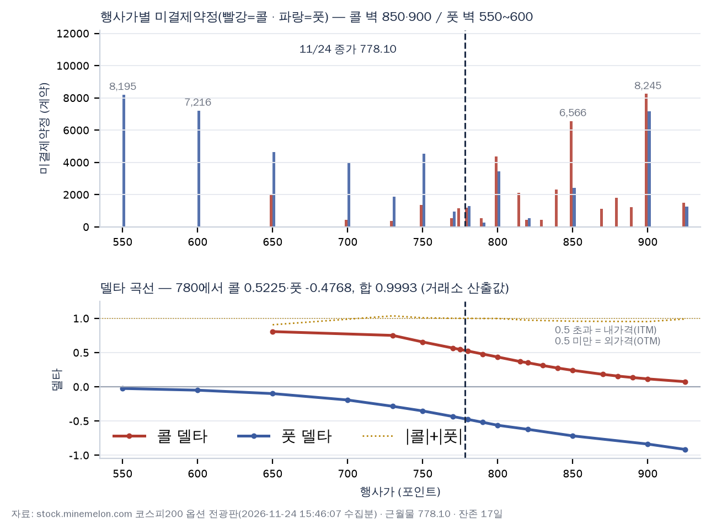

거래량은 얼마나 받아냈나, 미결제약정은 누가 남아 있나, 델타는 어느 쪽에 얼마나 걸려 있나를 답합니다. 셋 다 방향을 말해 주지 않습니다. 방향은 가격이 정하고, 이 셋은 그 방향을 믿을지 말지를 심사합니다. 그래서 순서도 정해져 있습니다 — 자리(가격) → 방향(MACD) → 시점(스토캐스틱) → 심사(거래량·미결제·델타).
가격은 +7.08% 올랐는데 거래량은 6.9% 줄고 미결제는 646계약(0.37%) 늘었을 뿐입니다. ①(신규 매수 유입)도 ②(숏 커버링)도 아닌 '힘 빠진 상승'입니다. 오늘 같은 날 추격 매수가 전부 손실 구간에 들어갑니다.
세 지표의 역할
| 지표 | 답하는 것 | 대표 오독 |
|---|---|---|
| 거래량 | 그 가격을 감당한 참여의 두께 | 크면 매수 신호 — 산 쪽·판 쪽은 같다 |
| 미결제 | 신규 유입인가 기존 청산인가 | 늘면 강세 — 새 매수·새 매도가 동시에 생긴다 |
| 델타 | 방향 노출·내재 확률·선물 환산 | 0.5면 반반 — 실제 확률은 47.3% |
| V/OI | 회전율 = 청산·승계의 비중 | 높으면 활발 — 방향 정보는 없다 |
가격 × 거래량 × 미결제 여덟 칸
2026-11-24 실측 적용| 조합 | 판독 | 행동 |
|---|---|---|
| 상승·증가·증가 | 신규 매수 유입(롱 빌드업) | 추세 지속, 눌림 매수 |
| 상승·감소·감소 | 숏 커버링, 새 매수 없음 | 꼭대기 경계, 추격 금지 |
| 하락·증가·증가 | 신규 매도 유입(숏 빌드업) | 추세 지속, 반등 매도 |
| 하락·감소·감소 | 롱 청산·손절 | 바닥권 접근 |
| 횡보·감소·급증 | 에너지 응축 | 돌파만 따라간다 |
| 상승·증가·감소 | 청산 물량이 밀어올림 | 당일 안에 끝난다 |
| 하락·증가·감소 | 투매 + 청산 | 반등 짧다 |
| 정체·감소·정체 | 정보 없음 | 관망 |
2026-11-24 실측 — 오늘은 어느 칸인가
| 항목 | 값 | 의미 |
|---|---|---|
| 종가 / 등락 | 778.10 (+7.08%) | 갭이 만든 상승 |
| 시가 → 종가 | 781.85 → 778.10 (-3.75p) | 정규장은 오히려 반납 |
| 거래량 | 145,772 (-6.9%) | 참여 감소 |
| 미결제 | 173,213 (+646, +0.37%) | 신규 유입 미미 |
| V/OI | 0.842 (전일 0.907) | 청산·승계 우위 |
| 야간선물 | 777.95 (+51.30p, +7.06%) | 상승은 밤에 완성 |
| 판정 | ①도 ②도 아닌 힘 빠진 상승 | 추격 금지 |
가짜 돌파 vs 진짜 돌파
| 항목 | 진짜 | 가짜 |
|---|---|---|
| 거래량 | 5봉 평균 1.8~2.0배 이상 | 평균 이하·1.2~1.8배 |
| 미결제 | 돌파 후 5~10분 내 순증 | 감소·정체(청산성) |
| 종가 | 레벨 위 2봉 연속 마감 | 꼬리만 찍고 복귀 |
| 호가·체결 | 체결강도 100 이상 유지 | 매도벽 앞 정체 |
| 시간 | 09:30~14:30 | 개장·12:00·단일가 |
델타 구간별 성격
| 구간 | 델타 | 처방 |
|---|---|---|
| 심부 내가격 | 0.9~1.0 | 선물 대체·헤지 다리 |
| 내가격 | 0.7~0.9 | 추세 추종 |
| 등가 | 0.45~0.55 | 양매도 기준, 헤지 재계산 |
| 외가격 | 0.15~0.35 | 프리미엄 매수 |
| 극외가 | 0.1 미만 | 로또, 물타기 금지 |
12월물 미결제 벽 (11/24 15:46)
| 구분 | 행사가 · 미결제 | 해석 |
|---|---|---|
| 콜 최대 | 900 · 8,245 (+900) | 상단 헤지 성격 |
| 콜 근월 | 800 · 4,369 | 내일 첫 저항 |
| 콜 청산 | 850 · 6,566 (-2,000) | 벽이 얇아짐 |
| 풋 최대 | 300 · 11,067 | 지지선 아님(폭락 헤지) |
| 풋 근월 | 750 · 4,528 | 내일 첫 지지 |
| 풋 라운드 | 550 · 8,195 / 600 · 7,216 | 대기 매수 |

780콜 델타 0.5225 + 풋 델타 0.4768 = 0.9993. 등가 ±20p에서는 합이 1.0이 성립하고 650·850 같은 외가에서 0.90~0.96까지 벌어집니다. 그 벌어진 폭이 곧 스큐의 크기입니다. 델타 0.5225는 확률이 아니라 N(d1)이고, 실제 ITM 확률은 47.3%(N(d2))입니다.
4단계 진입 심사
| 단계 | 보는 것 | 통과 조건 |
|---|---|---|
| ① 자리 | 기준선·미결제 4분면 | 기준선 ±0.5p 밖 |
| ② 방향 | 60분 MACD 0선·히스토 | 0선 위 골든/아래 데드 |
| ③ 시점 | 3분 스토캐스틱 | 추세 방향 눌림 교차 |
| ④ 심사 | 5봉 1.8배 + OI 순증 + 델타 | 3개 중 2개 이상(OI 필수) |
장중 8단계 체크
여덟 중 6개 이상 통과할 때만 진입하고, ④(미결제 방향)와 ⑧(손절 폭)은 필수입니다. 함정은 다섯 구간입니다 — 롤오버 2주(11/26~12/10, 근월+차월 합산), 08:30~08:45·15:35~15:45 단일가(판정 무효), 12:00 전후(거래량 급감), 사이드카 발동일(사이즈 1/3), 야간선물 상승(시초 재료로만).
전체 10쪽 자료(4분면 여덟 칸, 11/24 실측 해석, 돌파 판정표, 델타·미결제 벽, 양매도 손익분기, 통합 4단계, 11/25 적용표, 출처)는 이 글 PDF 내려받기 에 정리해 두었습니다.
출처: KRX 코스피200 옵션·선물 상품명세(증권사 4곳 교차 확인), 지표담 전광판 t2301(2026-11-24 15:46:07), 키움 [0441]·한국투자 [5135], ICE·TradingCharts·StockCharts(PVO·OBV), Granville(1963), Ni·Pearson·Poteshman JFE 78(1) 2005, Bessembinder·Seguin JFQA 28(1) 1993, Yu·Wang JBF 2004, Indicatr(2026) 돌파 2,807건, Finabase(2026) 162건, ChartDrift(2026) OBV 검증. 델타·프리미엄·미결제는 거래소 산출값이고, 하루 세타(2.675p)·손익분기(±24.8p)는 블랙-숄즈 계산치(r 3.0% 가정)입니다.